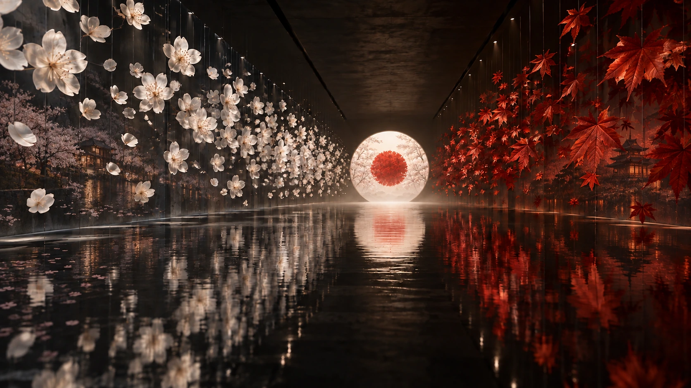
01 · 构想 · 一面季节的旗
白来自花，
红来自叶。
樱花铺开旗面的白，红叶向中央聚成红。先看清两种颜色从何而来，再抵达完整的旗。
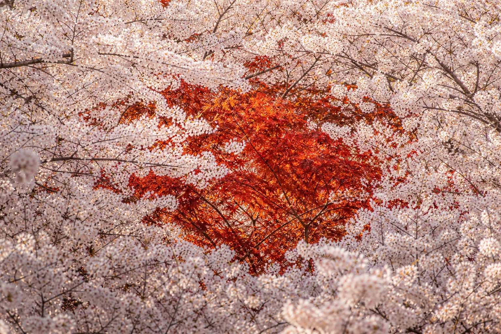
THE RED OF JAPAN · A TALE OF TWO SEASONS
樱花把春天铺成一片白，红叶把秋天聚成一轮红。
两个季节，共同完成一面日本的旗。

01 · 构想 · 一面季节的旗
樱花铺开旗面的白，红叶向中央聚成红。先看清两种颜色从何而来，再抵达完整的旗。
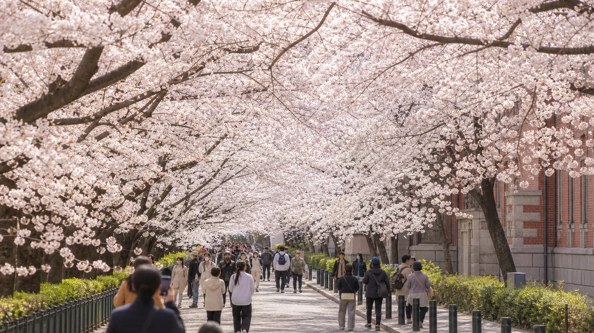
02 · THE WHITE / OSAKA MINT
造币局的晚樱从两侧合拢，行人走进由花构成的白。这里不是背景，而是旗面底色的第一层密度。
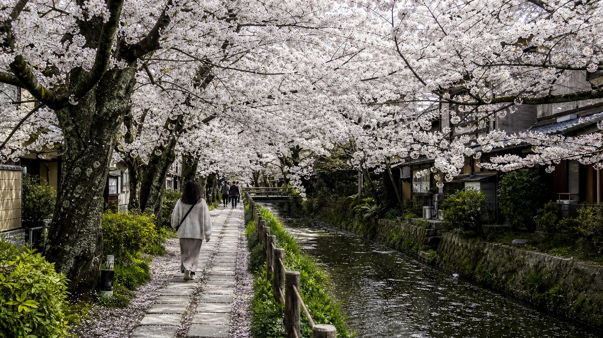
03 · THE WHITE / PHILOSOPHER'S PATH
水渠、低墙与行人的步幅收住漫天花枝。旗面的白因此不是空无，而是可以进入、可以呼吸的空间。
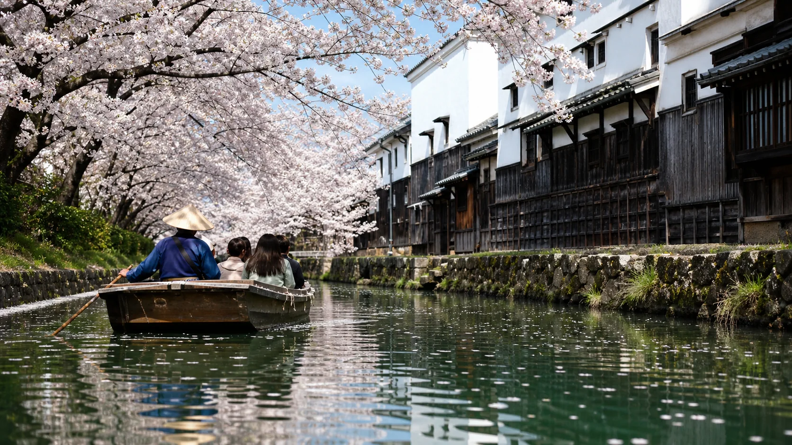
04 · THE WHITE / FUSHIMI
十石舟从酒藏与花岸之间缓缓驶过，水面带走花瓣。白色第一次离开步道，开始顺着水流前行。
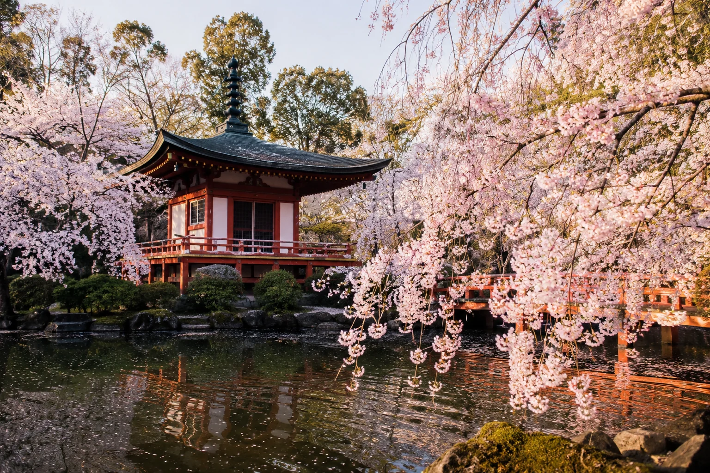
05 · THE WHITE / DAIGO-JI
醍醐寺的樱花点缀着朱红的弁天堂，把春天向上托起。旗面的白不只是横向的辽阔，更多了秩序与升腾。
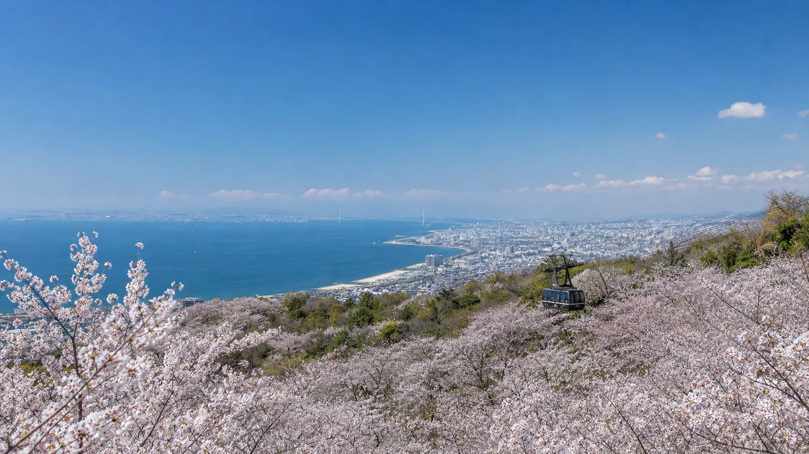
06 · THE WHITE / SUMAURA
须磨浦的樱花越过山坡，面向濑户内海。海蓝让花的白更清晰，也让春天拥有远景。
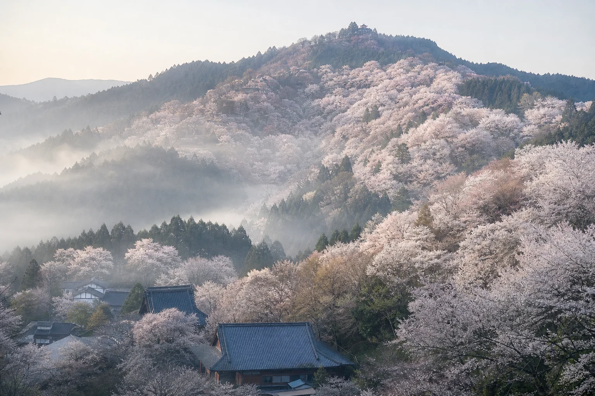
07 · THE WHITE / YOSHINO
吉野山从山脚延至云雾，樱花一层层铺开。一路累积的白，至此成为一整片可以远望的春天。
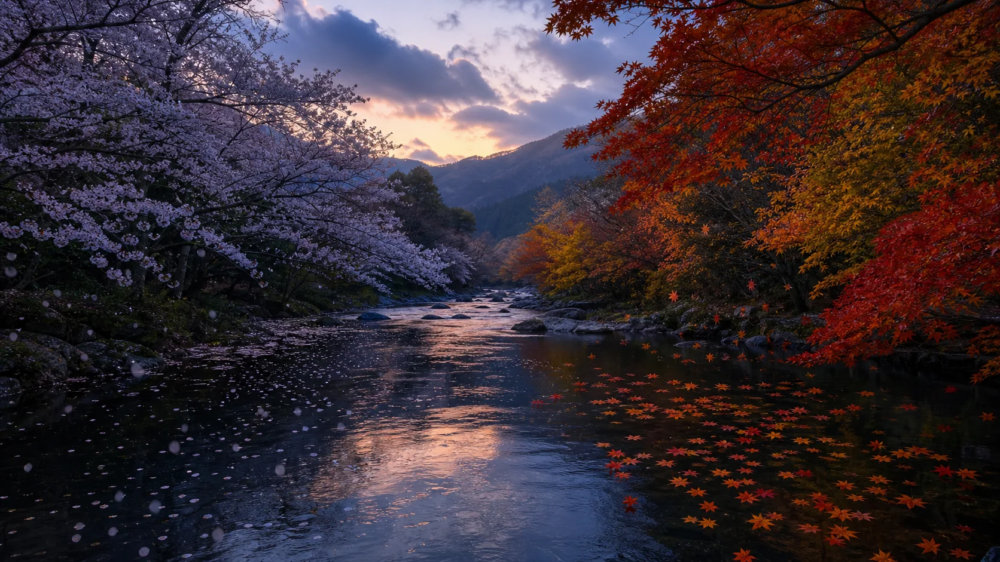
08 · WHITE TO RED
春风留下完整的白。时间继续向前，叶片从画面边缘出现，开始寻找旗帜的中心。
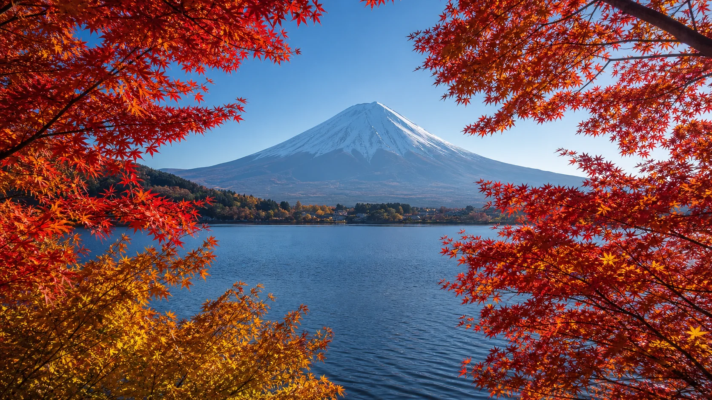
09 · THE RED / MOUNT FUJI
河口湖的蓝与富士山的白托住第一层红叶。红从远景开始，向旗面中央靠近。
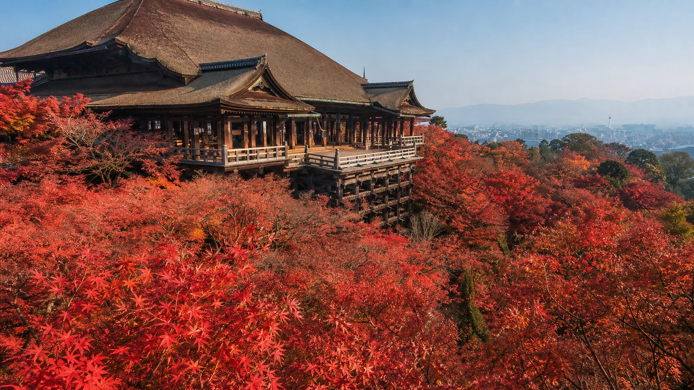
10 · THE RED / KIYOMIZU-DERA
清水舞台悬在层层红叶之上，人与建筑给秋色以尺度。中央的红不再是一枚符号，而是一片可以俯瞰的季节。
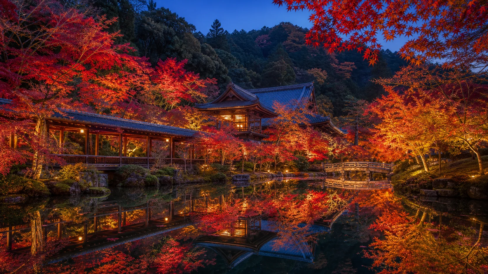
11 · THE RED / EIKANDO
回廊、池面与枫叶互相映照，同一枚红出现两次。秋日太阳因此不再平面，而有了光与倒影。
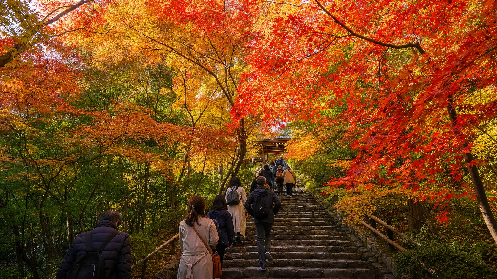
12 · THE RED / JOJAKKOJI
常寂光寺最震撼的不是苔藓，而是行人在上行途中被红、黄、橙与余绿层层包围。整条山径像大自然展开的画板。
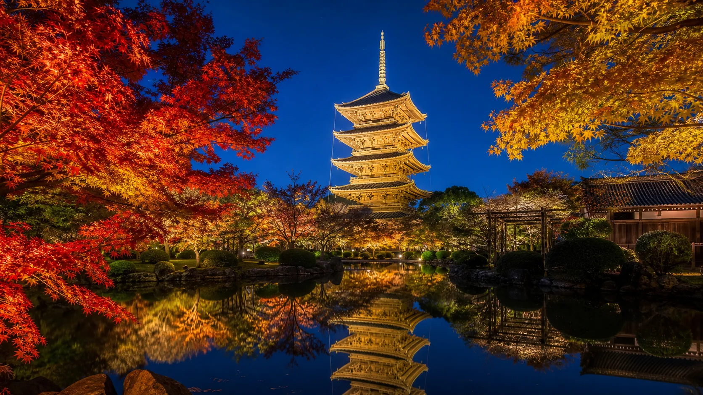
13 · THE RED / TO-JI
塔影把散开的秋色收束成清晰轮廓。五种红叶风景向中央汇合，季节的太阳终于完整。
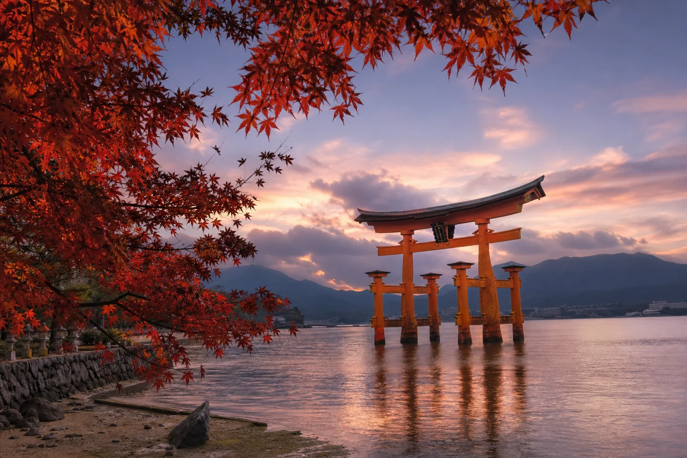
继续滚动 · 从樱花之白走向红叶之红
SEASONAL MATERIAL STUDY
地点不是清单，而是颜色的证据。
花樱花在水、路、山、海、舟与塔之间，铺开白。
葉红叶借雪峰、舞台、池水、山径、塔影与潮水，向中心聚拢。
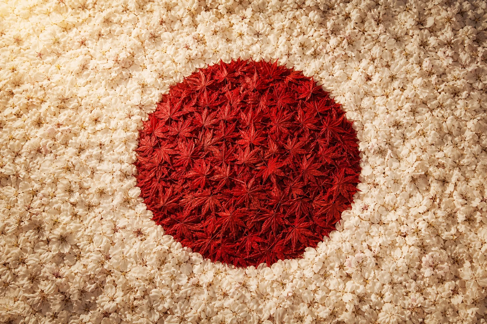
桜の白 · 紅葉の赤ONE FLAG · TWO SEASONS
白白，是六处樱花风景共同铺开的底色。
紅红，是六处红叶风景向中央汇成的太阳。
熟悉的日本国旗，因此拥有了地点、时间与生命。